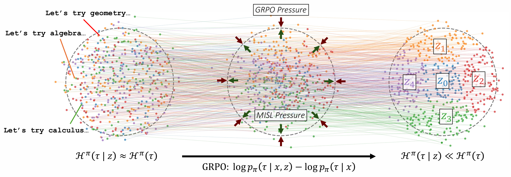
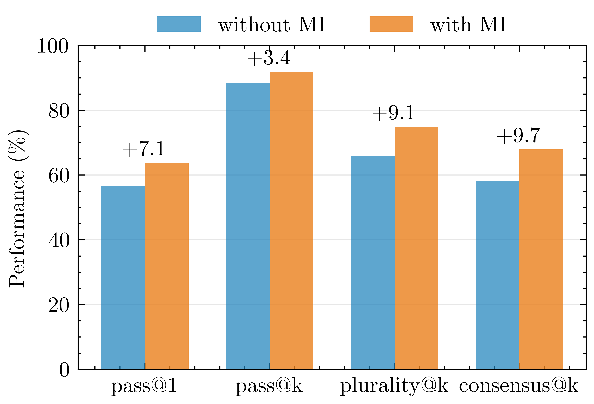
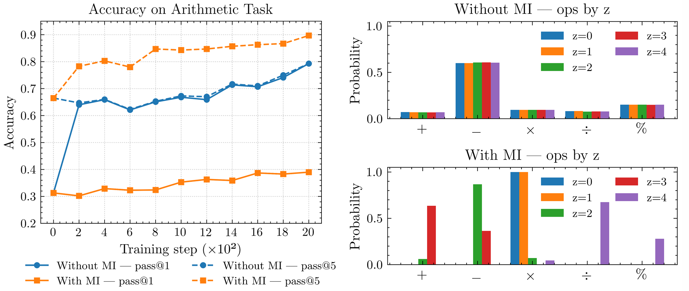
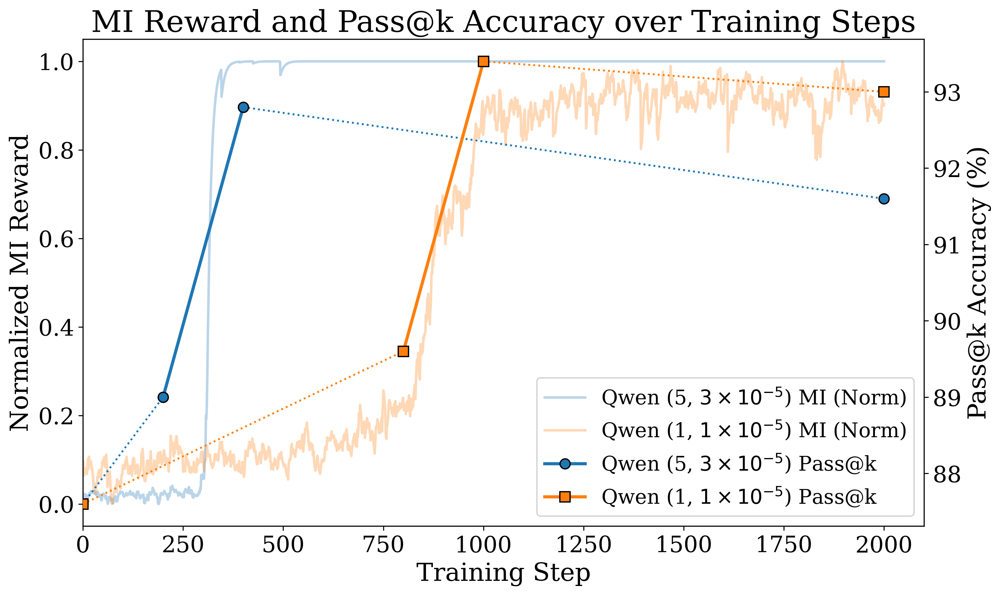

How the MISL reward improves pass@k performance. Before MISL (left), the trajectory distribution is independent of the latents $z$, so the conditional entropy is close to the marginal. Adding the token-level MI reward (right) yields well-separated clusters indexed by $z$, reducing conditional entropy while preserving high marginal entropy.

UpSkill improves mean multi-attempt accuracy without hurting single-attempt accuracy on GSM8K for Qwen 2.5-7B, achieving +3.4% in pass@k and +9.1% in plurality@k.
Abstract
Reinforcement Learning with Verifiable Rewards (RLVR) has improved the reasoning abilities of large language models (LLMs) on mathematics and programming tasks, but standard approaches that optimize single-attempt accuracy can inadvertently suppress response diversity across repeated attempts, narrowing exploration and overlooking underrepresented strategies. We introduce UpSkill, a training time method that adapts Mutual Information Skill Learning (MISL) to LLMs for optimizing pass@k correctness. We propose a novel reward that we implement within Group Relative Policy Optimization (GRPO): a token-level mutual information (MI) reward that encourages trajectory specificity to $z$. Experiments on GSM8K with three open-weight models, Llama 3.1–8B, Qwen 2.5–7B, and R1-Distilled–Qwen2.5–Math–1.5B, show that UpSkill improves multi-attempt metrics on the stronger base models, yielding mean gains of ~3% in pass@k for both Qwen and Llama without degrading pass@1. Additionally, we find both empirical and theoretical evidence that improvements in pass@k are closely tied to the mutual information objective.
The UpSkill Method
In some NP settings such as code generation or formal proof generation, LLMs are queried many times and each output is tested by a verifier, such as a suite of unit tests or a proof verifier. As long as at least one output is correct, the problem is solved, which motivates the use of the pass@k objective in these RLVR settings.
Most traditional LLM training or fine-tuning methods optimize for pass@1 objectives, which incentivizes always outputting the most likely answer. Our method addresses the question of how we can design diversity rewards that directly optimize for the pass@k objective.
1. The Problem: Response Collapse
A model undergoing standard RLVR training with pass@1 objectives optimizes for the trajectory that is considered most likely to be correct. After RLVR training, this often leads to just one dominant mode or strategy of solving a particular problem, resulting in highly similar outputs across multiple attempts. This reduces the effective number of independent attempts and limits pass@k performance. Even if the model has multiple different strategy modes, nothing forces the model to use a different mode on every rollout. It is highly likely that sampling a mode independently and uniformly at random for each trajectory, at least two trajectories will have been sampled from the same strategy mode.
2. Mutual Information Objective
UpSkill addresses the issues with effective number of independent attempts by adapting the skill discovery framework MISL to the LLM setting, increasing structured diversity while maintaining correctness. In particular, we maximize the token-level mutual information between a discrete latent strategy $z$ and the trajectory $\tau$. This simultaneously encourages high marginal entropy for broad coverage of trajectory space, and low conditional entropy given $z$ so each value of $z$ induces a reproducible strategy.
3. Reinforcement Learning Setup
We implement the MI objective through a token-level reward on the per-token probabilities output by the model. This reward is combined with correctness and KL penalties in GRPO training, and we do some hyperparameter ablations to find the best weights for each reward term. In evaluation, we take advantage of the additional structure formed with our latent skill $z$ to query the model with each different value of $z$ just once, which guarantees that each strategy being queried is different and prevents response collapse.
4. Theoretical Guarantees
Under some assumptions about the mixture distribution remaining stationary, we prove that pass@k improvement is both upper and lower bounded by the mutual information between $z$ and $\tau$. The lower bound shows that maximizing MI provably improves multi-attempt success rates, providing theoretical justification for our approach. Moreover, the upper bound shows that increasing MI is necessary for large pass@k improvements.
Experimental Results
Arithmetic Environment: Preventing Distribution Collapse
This environment presents three single-digit integers and a latent skill index $z\in\{0,1,\ldots,N-1\}$. A small transformer policy must select one of the digits as the target, then generate a simple arithmetic expression using the remaining two digits and an operation (addition, subtraction, multiplication, division, or mod) that evaluates exactly to that target value. Training uses GRPO and ablates whether the mutual information reward term is used. The latent variable $z$ is intended to induce different strategies, i.e. distinct, repeatable operator and operand choices, so that distinct values of $z$ produce diverse ways to hit the target.

MISL prevents entropy collapse.
Training curves show that under GRPO alone (blue), pass@1 and
pass@5 converge together, indicating multiple attempts provide
little benefit. With MISL (orange), pass@5 improves substantially
(+10%) while pass@1 remains modest, demonstrating that different
latents yield complementary solutions. Operator distributions show
distinct strategy specialization with MISL.
LLM Fine-Tuning and Evaluation on GSM8K
We train LoRA adapters with roughly 80M trainable parameters applied to three open-weight base models - Llama-3.1-8B, Qwen-2.5-7B, and R1-Distilled-Qwen2.5-Math-1.5B - using 2,000 training problems from the GSM8K dataset. When fine-tuning with the latent skill variable, its value is passed in at the beginning of the prompt before the question is asked. Evaluation is conducted with 500 held-out examples, with all experiments performed in a zero-shot setting and a 1024 token maximum sequence length. In the graph below, "Base" refers to querying the base models with no fine-tuning, while "Without MI" refers to fine-tuning the base models only on the standard GRPO rewards. "With MI" refers to fine-tuning with the UpSkill mutual information reward on top of the standard GRPO rewards.

Performance on 500 held-out problems with $N$=5 strategies. We observe gains on all metrics for the Qwen model. Base refers to the model before GRPO training, Without MI refers to after GRPO training without token MI, and With MI refers to training with correctness rewards and token MI.
| Model | Method | $\Delta$pass@k | Method | $\Delta$pass@k |
|---|---|---|---|---|
| Qwen | Correctness | +3.8% | MI | +5.2% |
| MI + correctness | +7.0% | MI + KL | +4.0% | |
| Llama | Correctness | +2.8% | MI | +0.8% |
| MI + correctness | +3.6% | MI + KL | +2.4% |
Ablations and Training Dynamics
We observe from training graphs that the model usually learns to maximize mutual information within a span of 250 training steps. We evaluate directly before and after this span and find that most of the eventual improvement in pass@k happens in this range.

GSM8K pass@5 scores over selected checkpoints of two training processes, overlaid on the mutual information rewards during training. The tuples in the legend are of the form ($\alpha_1$, lr).
Open Questions and Future Directions
- Semantic Embeddings for Diversity: Token-level MI rewards often result in superficial formatting or paraphrase ordering changes rather than semantically different strategies. Can we use a text-to-embedding model and define a semantic MI reward to encourage more meaningful diversity?
- Tsallis Entropy: Is it possible to get more direct guarantees on pass@k by optimizing for a reward function that uses Tsallis entropy, which looks closely related to pass@k, instead of Shannon entropy?
- More Complex Datasets: In this work, LLMs were only evaluated on GSM8K, which contains mostly basic problems that can only be solved in one way. On more difficult datasets with multiple possible strategies, does UpSkill perform better on a wider variety of models?
- Relaxing Theoretical Assumptions: The theory assumes that the mixture distribution remains stationary even as individual skill distributions change. Can we either relax this assumption and still prove similar theoretical guarantees, or design a new training procedure to enforce this assumption?
- Robust Skill Injection: The current setup passes in the latent skill variable as part of the LLM prompt, which is noisy if the LLM has already learned specific meanings for these tokens. Can we instead pass in the skills as embeddings that the LLM has not yet learned?
${\bf B\kern-.05em{\small I\kern-.025em B}\kern-.08em T\kern-.1667em\lower.7ex\hbox{E}\kern-.125emX}$
@inproceedings{shah2025upskill,
title = {UpSkill: Mutual Information Skill Learning for Structured Response Diversity in LLMs},
author = {Shah, Devan and Yang, Owen and Yang, Daniel and Zheng, Chongyi and Eysenbach, Benjamin},
booktitle = {Submitted to ICML 2026},
year = {2026}
}